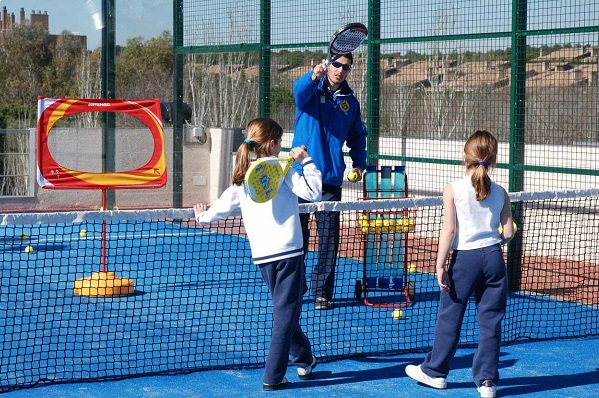
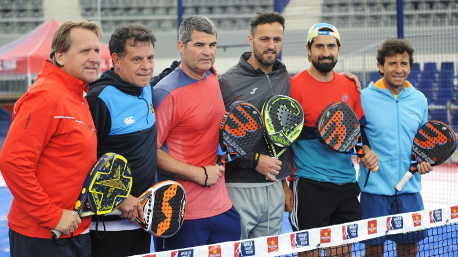

El club universitario más dinámico del circuito
Bienvenido al sitio web donde puedes encontrar toda información correspondiente al club PADEL UPM
El conjunto de monitores más cualificados se encargará de darte la formación en cuanto a técnica requerida en este deporte. Las clases prácticas te permitirán interiorizar los movimientos adecuados como si fueses naturales. Las clases colectivas convierten las clases en un espacio dinámico en el que jugar se convierte en una actividad placentera y divertida.
Si te sientes un campeón de verdad lo eres o simplemente quieres avanzar rápidamente en la técnica que rodea a este deporte te podemos configurar sesiones de entrenamiento a tu medida con un entrenador personal que se encargará de:
El club organiza campeonatos periódicos en los que te puedes divertir al mismo tiempo que mejoras en el deporte. Tenemos campeonatos de un día, de fin de semana y ligas regulares. Puedes participar en los torneos masculinos, femeninos y mixtos.
